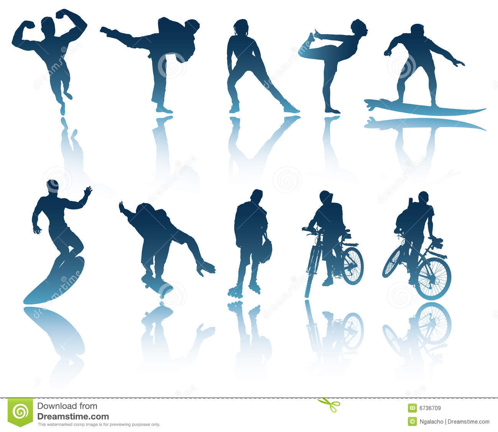

Sala de Fitness Militari, Sector 6, Bucuresti > Fitness 2000
- Fitness si nutritie - eMAG.ro
Descoperă gama Decathlon de fitness pentru barbati, cel mai bun preț îmbrăcăminte încălțăminte accesorii retur gratuit în magazin - Sport & Fitness - evoMAG.ro
sport pitt Suplimente nutritive, aparate fitness, echipamente sportive Rata: 1 lună Planul de rambursare și toate cumpărăturile efectuate le poți vedea în aplicația MAIBank. - Top Shop produse fitness, sport, teleshoping | Top Shop
La Be LIVE Fitness nevoile tale sunt prioritatea noastra. In 2017 Be LIVE Fitness Center a aparut in intampinarea nevoilor oamenilor dornici sa-si imbunatateasca stilul de viata si pentru a crea o experienta de fitness, aerobic si wellnes inedita si de necombatut. Am adunat pentru tine cea mai pregatita echipa de antrenori, ce sunt aici mereu ... - Genți sport | GymBeam.ro
Aparate fitness - 7 ani Structura metalica/3 ani tije, rulmenti/1 an tapiterii, etc. Aparate cardio – corp aparat 7 ani/ 3 ani AC motor/ 2 ani Invertor, Display. Schita arhitect proiect Va fi realizata dupa dimesiunile clientului si in functie de regulile generale de dispozitie a functiunilor intr-un Gym/Club/Spa – va vom pune la dispozitie ... - Mingi fitness. Libertate în fiecare zi - eMAG.ro
Acestea ofera un grad optim de confort in practicarea activitatilor precum aerobic, fitness, zumba, yoga, jogging, tenis, box, atletism, miscare in aer liber sau a altui sport. Indiferent de constitutia ta sau de preferintele legate de designul echipamentelor, cu siguranta vei fi multumita de variantele pe care ti le recomandam! - Sala de Fitness Militari, Sector 6, Bucuresti > Fitness 2000
Acceseaza site-ul evoMAG.ro si vezi gama completa de Sport & Fitness - evoMAG.ro la PRETURI Avantajoase Livrare in aceeasi zi pentru Bucuresti Posibilitate de Plata in RATE Fara Dobanda Nu rata Ofertele! - Articole sportive de Fitness pentru barbati | Decathlon
Fitness exclusiv pentru femei. Ai ajuns la locul potrivit! Fie ca iti doresti sa faci fitness, fie ca preferi clase, I FIT I FUN este sala de fitness exclusiv pentru femei in Bucuresti, Sector 6, zona Drumul Taberei - Militari, care nu te va dezamagi! - Echipament fitness pentru femei
Produse teleshopping pentru fitness si sport. Cele mai bune produse vazute la TV direct la tine acasa! Indiferent de unde alegi sa faci sport, in intimitatea casei tale sau in aer liber, aici gasesti aparatul si echipmanetul potrivit pentru tine. Descopera produsele - Prosper Fitness -Sala de Fitness, Body Building – Miscare ...
SPORTLANDIA - este un magazin sportiv de echipamente calitative destinate pentru fitness, sporturi de vară și de iarnă, precum și produse pentru activități în aer liber. În magazin și pe site Veți găsi aparate pentru sport, articole de îmbrăcăminte și încălțăminte sportive pentru orice anotimp. - Aparate Fitness Semiprofesionale - Christopeit Sport
Descopera Fitness si nutritie la eMAG! Deschidere colet la livrare, plata in rate/ retur gratuit in 30 de zile. Ai libertatea sa alegi din milioane de produse.
Navigation Home Despre noi Galerie foto Servicii Contact Home Despre noi Galerie foto Servicii Contact
Despre noi
Fitness 2000 face parte din Complex Sportiv 2000 si isi propune sa ofere clientilor sai servicii sportive de cea mai inalta calitate. In Decembrie 2017 au fost finalizate lucrarile de modernizare in urma carora va putem oferi o varietate mai mare de activitati precum si siguranta si confort sporite.Fitness
Noua sala de fitness se intinde pe o suprafata de 450mp si beneficiaza de iluminare naturala.Vestiare
Vestiarele se intind pe 150mp si dispun de saune individuale si dulapuri securizate.Inot
Noul bazin de inot din cadrul Complex Sportiv 2000 are 750mp si este iluminat subacvatic.Jacuzzi
Jacuzzi-ul are capacitate de 8 persoane si se afla langa bazinul de inot.Incalzire
Pardoseala este incalzita si tratata anti-alunecare pentru confortul si siguranta ta.Serviciile Fitness 2000
La noi totul este cu si despre sport. Suntem trup si suflet pentru serviciile oferite si pretuim fiecare client in parte. La noi vei fi tratat cu seriozitate, in vestiare vei gasi curatenie si iti vei putea pastra lucrurile in perfecta siguranta in dulapurile securizate. Personalul iti sta la dispozitie oricand ai nevoie de ceva.Sala de Fitness
Centrul nostru vine in ajutorul dumneavoastra cu un Fitness Studio, dotat cu apratura de ultima generatie, Technogym, si instructori bine pregatiti pentru a va ajuta sa va atingeti obiectivele propuse in acest domeniu.
Aquagym
De ce aquagym? Este un sport cu adevărat distractiv! Pe lângă efectele pozitive asupra siluetei, aquagym-ul are efecte benefice asupra psihicului şi stării generale. Toate mişcările se execută pe muzică şi permit descărcarea tensiunii acumulate la birou şi a stresului.
Momentan nu se tin sedinte de AquaGym.
Jacuzzi
Dupa un antrenament in forta sau o zi obositoare de munca, o relaxare in Jacuzzi este tot ce ai nevoie ca sa te relaxezi. Poti sa iti aduci prietenii pentru ca in Jacuzzi-ul nostru au loc pana la 8 persoane.
Bazin de Inot
In bazinul acoperit, de dimensiuni semiolimpice au loc cursuri de initiere pentru copii cu varste intre 5 si 17 ani. Adultii pot invata si ei sa inoate optand pentru lectii particulare sau daca stiu deja sa inoate, pot veni aici pentru relaxare.
Piscina
Inotul iti ofera un excelent antrenament cardiovascular si de asemenea iti tonifica musculatura, te ajuta sa slabesti si iti fortifica plamanii. Langa piscina vei gasi dusuri mereu curate si sauna.
Sauna
Detoxifiaza-te si creste-ti imunitatea cu vizite regulate la sauna uscata. Vei gasi o sauna pentru femei si una pentru barbati, localizate in vestiarele individuale.
Contact
Suntem doar la un telefon sau email distanta de orice intrebare ai avea. Te asteptam cu drag.Orar
Luni Vineri: 7-23
Sambata-Duminica: 8-22
Contact
0724.212.971
021.434.35.72
office@complexsportiv2000.ro
Adresa
Strada Gabriela Szabo, Cartierul Militari, Sector 6, Bucuresti
2018 © FITNESS 2000 * TOATE DREPTURILE REZERVATE Construit si promovat de Fitness2000, parte a grupului Complex Sportiv 2000 proceseaza date cu caracter personal conform noului regulament GDPR, pastrand confidentialitatea acestora. Daca doriti mai multe detalii va rugam sa ne contactati. Ok